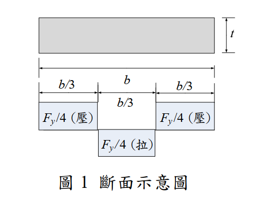
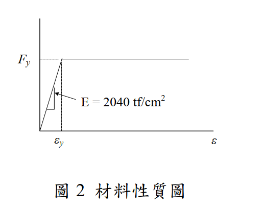

考題編號：SS-2016-3
主分類： SS-U1-1 拉力及壓力桿件
副分類： 無
設計法： LRFD
標籤： 殘留應力 壓力桿件 柱強度曲線 切線模數 挫屈應力 比例限 Euler曲線
1. 原始題目重述 (Problem Restatement)
子問題：
- (一) 何謂殘留應力？（5 分）
- (二) 殘留應力的來源有哪些？（5 分）
- (三) 殘留應力對受壓桿件的影響為何？（5 分）
- (四) 圖 1 所示為某一斷面殘留應力的分布圖（翼板外側各 $b/3$ 為壓應力 $F_y/4$，內側為拉應力 $F_y/4$），請繪出該斷面受壓時強軸的 $F_{cr}$ vs $L/r$ 曲線（$F_{cr}$：由軸壓力所引致的挫屈應力；$y$ 軸為 $F_{cr}$，$x$ 軸為 $L/r$，假設 $K=1$）。已知材料降伏應力 $F_y = 2.5 \text{ tf/cm}^2$，完美彈塑性曲線如圖 2，$E = 2040 \text{ tf/cm}^2$。（15 分）
殘留應力分佈（圖 1）：
←── 翼板寬 b ──→
┌────┬────────────┬────┐ ← 翼板（厚 t）
│-b/3│ b/3 │-b/3│
│壓Fy/4│ 拉Fy/4 │壓Fy/4│
└────┴────────────┴────┘
（翼板兩端 b/3 為殘留壓應力，中段為殘留拉應力）
（腹板區域：拉應力 Fy/4 ← 圖 1 標示在下方）

圖說（圖 1 斷面示意圖）：翼板寬度 $b$，厚度 $t$，殘留應力為塊狀分佈：翼板兩端各 $b/3$ 區段為殘留壓應力 $F_y/4$（圖中標「壓」），中央 $b/3$ 區段為殘留拉應力 $F_y/4$（圖中標「拉」）；腹板區域（圖下方小方塊）亦為拉應力 $F_y/4$。殘留應力呈自平衡分佈：壓區合力 $= 2 \times (b/3) \times t \times (F_y/4)$，拉區合力 $= (b/3) \times t \times (F_y/4) + \text{腹板拉力}$，合計淨力為零。

圖說（圖 2 材料性質圖）：鋼材採完全彈塑性假設（Perfect Elastic-Plastic）。彈性段：應力 $F = E\varepsilon$，斜率 $E = 2040\text{ tf/cm}^2$，至降伏應變 $\varepsilon_y = F_y/E$。塑性段：應力維持 $F = F_y = 2.5\text{ tf/cm}^2$ 水平延伸（無應變硬化，無下降段）。此假設是切線模數理論的材料基礎——降伏後切線模數 $E_t = 0$，降伏前 $E_t = E$。
📊 互動圖請參閱：
SS-2016-3-column-curve-viz.html
2. 考題核心精神與出題者意圖 (Core Concepts & Examiner's Intent)
核心觀念：殘留應力降低柱的挫屈強度——中間細長比最危險
此題系統性地測驗考生對殘留應力的全面理解：從定義、來源、影響機制，到定量繪製柱強度曲線的能力。第四小題需要具體計算曲線上的關鍵轉折點。
出題者測驗重點：
- 殘留應力的「比例限（Proportional Limit）」概念
- 切線模數（Tangent Modulus）與有效彈性模數的關係
- 能否正確計算 $L/r$ 的轉折點（由彈性轉向非彈性的臨界細長比）
- Euler 曲線 vs 實際柱強度曲線的形狀差異
3. 解題戰略地圖與陷阱分析 (Strategic Roadmap & Trap Analysis)
步驟規劃（第四題）：
- 由殘留應力分佈求出比例限（Proportional Limit）$F_{PL}$
- 計算彈性挫屈轉折點 $(L/r)_{\text{trans}}$：令 $F_e = F_{PL}$
- 確定曲線的三個區域：塑性（短柱）、非彈性挫屈（中等柱）、彈性 Euler（長柱）
- 計算關鍵點的數值，繪製示意圖
關鍵陷阱：
⚠️ 陷阱1：比例限的計算方向
殘留應力為壓應力 $F_{rc} = F_y/4$ 時，疊加外部壓應力 $F_a$ 後，翼板尖端最先達到降伏：
$F_a + F_{rc} = F_y$ → $F_a = F_y - F_{rc} = 3F_y/4$
比例限 $F_{PL} = 3F_y/4 = 1.875 \text{ tf/cm}^2$，非 $F_y$ 本身。⚠️ 陷阱2：曲線形狀描述不完整
完整的 $F_{cr}$ vs $L/r$ 曲線需包含三段：(a) $F_{cr} = F_y$（極短柱），(b) 切線模數非彈性曲線，(c) Euler 彈性曲線。漏掉任何一段均不完整。⚠️ 陷阱3：Euler 曲線的起始點計算錯誤
Euler 曲線的有效起始點是 $(L/r)_{\text{trans}}$，其數值由 $F_e = F_{PL}$ 求出，而非由 $F_e = F_y$ 求出。
3.5 變數層次分析（Variable Hierarchy Analysis）
複習提示：解題後，在每個卡住的知識點「卡關?」欄標記
⚠；第二次複習時只看有⚠的項目。
最終目標： 定義殘留應力 → 說明來源與對壓力桿影響 → 計算比例限 $F_{PL}$ 與轉折點 $(L/r)_{trans}$ → 繪製三段式柱強度曲線
主要公式（$\boxed{\phantom{x}}$ = 未知，待推導）
$$\boxed{F_{PL}} = F_y - F_{rc} = F_y - \frac{F_y}{4} = \frac{3F_y}{4}$$
$$\boxed{(L/r)_{trans}} = \sqrt{\frac{\pi^2 E}{F_{PL}}} = \sqrt{\frac{4\pi^2 E}{3F_y}}$$
$$F_{cr}^{(\text{非彈性})} = \frac{F_y \cdot F_e}{F_e + F_{rc}} \quad (L/r \leq (L/r)_{trans})$$
$$F_{cr}^{(\text{彈性})} = \frac{\pi^2 E}{(L/r)^2} \quad (L/r > (L/r)_{trans})$$
L1：題目直接給定
| 符號 | 數值 | 說明 |
|---|---|---|
| $F_y$ | 2.5 tf/cm² | 降伏應力 |
| $E$ | 2,040 tf/cm² | 彈性模數 |
| $F_{rc}$ | $F_y/4 = 0.625$ tf/cm² | 殘留壓應力（翼板外側各 $b/3$） |
| $K$ | 1.0 | 有效長度係數（題目假設） |
| 殘留應力分佈 | 翼板外側各 $b/3$ 壓，中段 $b/3$ 拉，腹板拉 | 塊狀分佈（圖 1） |
L2：需知識點推導
Step 1：殘留應力定義與來源（子問題一、二）
| 符號 | 公式 / 來源 | 卡關? |
|---|---|---|
| 定義 | 無外力作用下，截面自平衡的初始應力系統 | |
| 主要來源 | ① 不均勻冷卻（熱軋型鋼）② 焊接 ③ 冷加工 |
Step 2：殘留應力對壓力桿的影響（子問題三）
| 符號 | 公式 / 來源 | 卡關? |
|---|---|---|
| 提前降伏條件 | $F_a + F_{rc} \geq F_y$ → 翼板尖端提前降伏 | |
| 切線模數降低 | $E_t < E$ → $F_{cr} < F_e$（Euler） | |
| 影響最大的範圍 | 中等細長比（非彈性挫屈段），短柱和長柱影響較小 |
Step 3：比例限與轉折點（子問題四）
| 符號 | 公式 / 來源 | 卡關? |
|---|---|---|
| $F_{PL}$ | $F_y - F_{rc} = 2.5 - 0.625 = 1.875$ tf/cm² | |
| $(L/r)_{trans}$ | $\sqrt{4\pi^2 E / 3F_y} = \sqrt{10742} = 103.6$ |
Step 4：三段式 Fcr 曲線
| 符號 | 公式 / 來源 | 卡關? |
|---|---|---|
| 短柱（$L/r \to 0$） | $F_{cr} = F_y = 2.5$ tf/cm²（全截面降伏） | |
| 非彈性段（$L/r \leq 103.6$） | $F_{cr} = F_y F_e / (F_e + F_{rc})$（切線模數理論） | |
| 彈性段（$L/r > 103.6$） | $F_{cr} = \pi^2 E / (L/r)^2$（Euler） | |
| 轉折點 | $(L/r = 103.6, F_{cr} = 1.875)$（兩段連續） |
L3：深層知識（不懂就卡住）
| 知識點 | 說明 | 補強頁 | 卡關? |
|---|---|---|---|
| 比例限 $F_{PL}$ 的計算方向 | $F_{PL} = F_y - F_{rc}$（外壓 + 殘留壓 = 降伏），$F_{PL}$ 是外壓的上限 | RESIDUAL-STRESS | |
| 切線模數理論（Shanley） | 挫屈時應力單調增加，全截面用 $E_t$，為保守下界；優於雙模數理論 | TANGENT-MODULUS-THEORY | |
| Euler 曲線的起始點 | 由 $F_e = F_{PL}$ 決定，不是 $F_e = F_y$！（常見錯誤） | COLUMN-STRENGTH-CURVE | |
| 三段曲線的形狀 | 短柱水平線（$F_y$）→ 非彈性下彎段（低於 Euler）→ 彈性 Euler 曲線 | COLUMN-STRENGTH-CURVE | |
| 殘留應力自平衡條件 | 壓區合力 = 拉區合力，淨力與淨力矩均為零 | RESIDUAL-STRESS |
4. 步驟化詳細計算過程 (Step-by-Step Detailed Calculation)
(一) 殘留應力的定義
殘留應力（Residual Stress） 是構材在沒有任何外力作用下，由於製造、加工或施工過程中的不均勻處理，仍殘留於截面內部的自平衡應力系統。
- 截面內部的殘留應力自我平衡：壓區合力 = 拉區合力（淨力 = 0，淨力矩 = 0）
- 屬於初始應力（Initial Stress），在外力施加前即已存在
- 無法用一般量測外部反力的方式檢測，需截斷取樣或 X 射線繞射法量測
(二) 殘留應力的來源
| 類型 | 說明 | 典型場合 |
|---|---|---|
| ①不均勻冷卻 | 熱軋型鋼脫模後，截面各部位冷卻速率不同（翼板尖端最薄，冷最快；翼板-腹板交叉處最厚，冷最慢）。先冷部位受拉，後冷部位因受先冷部位的拘束而受壓。 | 熱軋 H 型鋼（最主要） |
| ②焊接（熱輸入不均） | 焊縫處局部加熱冷卻後收縮，在焊縫鄰近區域產生壓應力，遠處產生拉應力 | 組合斷面、補強板 |
| ③冷加工（Cold Working） | 在常溫下進行彎曲、矯正、剪切等加工，使材料局部超過降伏點後，卸載時彈性回彈不完全 | 冷彎型鋼、機械矯直 |
| ④表面處理 | 噴砂、研磨等處理使表層產生局部壓縮殘留應力（通常有利） | 疲勞強化處理 |
| ⑤裝配應力 | 強迫對位、預應力螺栓拉緊等施工操作 | 鋼構架施工 |
(三) 殘留應力對受壓桿件的影響
影響機制（三步驟說明）：
步驟 1：提前降伏，減小有效彈性截面
當施加的外部壓應力 $F_a$ 加上截面殘留壓應力 $F_{rc}$ 超過 $F_y$ 時，該處纖維提前降伏：
$$F_a + F_{rc} \geq F_y \quad \Rightarrow \quad F_a \geq F_y - F_{rc}$$
此時截面只有未降伏的彈性區域能抵抗額外的壓力增量，有效截面積減小。
步驟 2：切線模數（Tangent Modulus）降低
由於部分截面已降伏（斜率 $E_t < E$），有效剛度降低：
$$E_t < E \quad \Rightarrow \quad F_{cr} = \frac{\pi^2 E_t}{(KL/r)^2} < \frac{\pi^2 E}{(KL/r)^2} = F_e$$
步驟 3：柱強度在中等細長比（Intermediate Slenderness）時降低最多
- 極短柱（$L/r \to 0$）：$F_{cr} \to F_y$（全截面壓縮降伏），殘留應力影響有限
- 中等細長比（$30 < L/r < 130$ 左右）：挫屈發生在非彈性範圍，殘留應力大幅降低 $F_{cr}$
- 極長柱（$L/r$ 很大）：彈性挫屈，殘留應力已無顯著影響（因為 $F_e < F_{PL}$，整截面仍彈性）
$$\boxed{\text{殘留應力對中等細長比的柱影響最大，實際 } F_{cr} \text{ 低於 Euler 理論值}}$$
(四) 繪製 $F_{cr}$ vs $L/r$ 曲線（強軸，$K = 1$）
已知：
$$F_y = 2.5 \text{ tf/cm}^2, \quad E = 2040 \text{ tf/cm}^2, \quad F_{rc} = F_y/4 = 0.625 \text{ tf/cm}^2$$
步驟 1：求比例限 $F_{PL}$
翼板尖端受殘留壓應力 $F_{rc} = F_y/4$，外部壓應力疊加達降伏：
$$F_{PL} = F_y - F_{rc} = F_y - \frac{F_y}{4} = \frac{3F_y}{4} = \frac{3 \times 2.5}{4} = \boxed{1.875 \text{ tf/cm}^2}$$
步驟 2：求彈性-非彈性轉折點 $(L/r)_{\text{trans}}$
彈性 Euler 挫屈臨界應力等於比例限時，為由彈性進入非彈性的轉折點：
$$F_e = \frac{\pi^2 E}{(L/r)^2} = F_{PL} = \frac{3F_y}{4}$$
$$(L/r)_{\text{trans}}^2 = \frac{\pi^2 E}{3F_y/4} = \frac{4\pi^2 E}{3F_y} = \frac{4 \times 9.870 \times 2040}{3 \times 2.5} = \frac{80,567}{7.5} = 10,742$$
$$(L/r)_{\text{trans}} = \sqrt{10{,}742} = \boxed{103.6}$$
步驟 3：建立各區域的 $F_{cr}$ 公式
區域 A（彈性挫屈，$L/r > 103.6$）：
$$F_{cr} = F_e = \frac{\pi^2 E}{(L/r)^2} = \frac{\pi^2 \times 2040}{(L/r)^2}$$
區域 B（非彈性挫屈，$0 \leq L/r \leq 103.6$）：
依切線模數理論，對於本題殘留應力分佈（翼板端部均勻壓應力 $F_{rc}$），推導得：
$$F_{cr} = \frac{F_y \cdot F_e}{F_e + F_{rc}} = \frac{F_y}{\displaystyle 1 + \frac{F_{rc}}{F_e}}$$
其中 $F_{rc} = F_y/4 = 0.625 \text{ tf/cm}^2$。
邊界條件驗證：
- $L/r \to 0$：$F_e \to \infty$，$F_{cr} \to F_y = 2.5 \text{ tf/cm}^2$ ✓
- $L/r = 103.6$：$F_e = 1.875 = F_{PL}$，$F_{cr} = \dfrac{2.5 \times 1.875}{1.875 + 0.625} = \dfrac{4.688}{2.500} = 1.875$ ✓（與彈性段連續）
步驟 4：計算曲線關鍵數值
| $L/r$ | $F_e = \pi^2 E / (L/r)^2$ (tf/cm²) | $F_{cr}$ (tf/cm²) | 備註 |
|---|---|---|---|
| 0 | ∞ | 2.500 | 等於 $F_y$（短柱降伏） |
| 40 | 12.57 | $2.5 \times 12.57/13.20 =$ 2.381 | 非彈性 |
| 60 | 5.59 | $2.5 \times 5.59/6.22 =$ 2.247 | 非彈性 |
| 80 | 3.147 | $2.5 \times 3.147/3.772 =$ 2.086 | 非彈性 |
| 100 | 2.013 | $2.5 \times 2.013/2.638 =$ 1.909 | 非彈性 |
| 103.6 | 1.875 | 1.875 | ← 轉折點（$F_{PL}$） |
| 120 | 1.395 | 1.395 | 彈性 Euler |
| 150 | 0.896 | 0.896 | 彈性 Euler |
| 200 | 0.504 | 0.504 | 彈性 Euler |
步驟 5：曲線特徵描述
F_cr
(tf/cm²)
2.5 ─── ○ ─────────────────────────────── F_y = 2.5（短柱塑性降伏線）
╲
╲ ← 非彈性區（切線模數曲線，位於 Euler 曲線之下）
1.875 ─── ╲ ─ ○ ─────────────────────
╲ ╲ ← 轉折點 (L/r=103.6, Fcr=1.875)
╲ ╲ Euler 曲線（彈性，L/r > 103.6）
╲ ╲
╲ ╲
0 ────────────────────────────────── L/r
|
103.6
三段特徵：
- $L/r \leq$ 約 5：$F_{cr} \approx F_y$（完全塑性降伏，短柱不挫屈）
- $5 < L/r \leq 103.6$：非彈性挫屈（切線模數）曲線，位於 Euler 曲線之下，位於 $F_y$ 之下
- $L/r > 103.6$：彈性 Euler 曲線，$F_{cr} = \pi^2 E / (L/r)^2$
$$\boxed{(L/r)_{\text{trans}} = 103.6, \quad F_{PL} = 1.875 \text{ tf/cm}^2}$$
5. 關鍵爭議點與進階探討 (Critical Issues & Advanced Discussion)
切線模數公式的推導背景
本解採用的非彈性 $F_{cr}$ 公式 $F_{cr} = F_y F_e/(F_e + F_{rc})$ 是針對翼板尖端有均勻殘留壓應力，且分佈為矩形塊狀（每側 $b/3$ 寬度）的情況推導。若殘留應力為線性（三角形）分佈，公式會略有不同，但曲線形狀趨勢相同。
Shanley 切線模數理論 vs 雙模數理論
- 切線模數理論（Tangent Modulus Theory）：Shanley（1947）証明柱在挫屈發生時，截面各點應力單調增加（無回彈），故全截面使用切線模數 $E_t$，為保守下界。
- 雙模數理論（Double Modulus Theory / Engesser）：假設挫屈時一側回彈（$E$）一側繼續加載（$E_t$），理論上偏不保守。
- 實驗結果接近切線模數理論，現行規範（AISC/LRFD）採用切線模數作為基礎。
強軸 vs 弱軸差異
本題要求強軸。若計算弱軸（$r_y < r_x$），相同的 $L/r$ 值對應更低的 $r$，即物理上更短的無支撐長度才達到同等細長比——弱軸通常控制整體挫屈設計。
考場安全答法
| 子題 | 核心答法 |
|---|---|
| (一) | 「無外力作用下，由製造過程產生、截面自平衡的初始應力」 |
| (二) | 「不均勻冷卻（主要）、焊接、冷加工」（至少三項） |
| (三) | 「提前降伏 → 有效截面縮小 → 切線模數下降 → 挫屈強度降低，中等細長比影響最大」 |
| (四) | 計算 $F_{PL} = 3F_y/4 = 1.875$，$(L/r)_{\text{trans}} = 103.6$，畫出三段式曲線 |